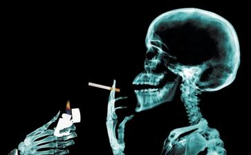

如今,尽管我们已认识到吸烟的危害,可是社会上还是有不少的人吸烟。有的烟民还鼓吹“天天一包烟,快活似神仙”。更有甚者,一天可能还不止吸一包。吸烟不仅花钱还有害身体
(一)无刀兵劫。世上刀兵大劫,皆由人心好杀所致。人人戒杀放生,则人人全其慈悲爱物之心,而刀兵劫运,亦自消灭于无形,此转移世运之绝大运动也,深望大政治家,大教育家,大农工家,注意于此,力为提倡,必有绝大效果。
(二)集诸吉祥。吾人一发慈悲之心,则喜气集于其身,此感应必然之理。
(三)长寿健康。
(四)多子宜男。放生者善体天地好生之心,故获宜男之庆。
(五)诸佛
(六)物类
(七)无诸灾难。慈悲之人,福德日增,一切患难,皆无形消灭。
(八)得生天上。戒杀放生者,来世得生于四王天,享无边之福。若兼修
(九)现在为人生极危险时代。盖烟酒之癖,恋爱之魔,缠绕众人。如众生报恩,则诸恶消灭,四季安宁。
(十)动物由下级进于高阶之状态,与人类由野蛮进于文明之阶级相符合。据生物学家之言曰:凡生物皆应于外界之状态而生变化。如人人戒杀放生,则生生不息,善心相感,正似子孙代代相传,永远福寿。
浅释放生放生就是救那些被擒被抓,将被宰杀,命在垂危的众生的命,而众生最宝贵的就是自己的生命,救他们的命,他们感激最深,所以功德至大!
我们今生累劫以来所造的杀业早已无量无边,放生就是出钱出力来救赎众生的性命,以偿还以你我们所积欠无数的杀债。
放生与其他的功德不一样,是救命在旦夕,随时将被宰杀的生命,是千钧一发,刻不容缓的行动,就好像是医院的急诊急救一般,一个
佛心就是大慈悲心,慈悲心是
任何一个众生的
与其空口说得万言,不如老实行得一字。学佛最重要的就是实践。在放生真实的行动中,真正去培养慈悲,真正去解救生命,真正去为众生皈依
吃素与放生是学佛人行持上最重要的二件事。但吃素只是止恶,是消极地不再造杀业,不再积欠新的杀债;而放生却是扬善,是积极地救赎生命,偿还以前所欠的杀债。吃素而不放生,以前欠的杀债还是有果报的;放生而不吃素,所赚得的功德又因为吃肉
我们当天放生,当天无数身陷牢笼的众生马上获得了自由,当天无数濒临死亡的生命马上重拾了生机,无限的功德当天马上可以获得。并且不管一人多人,钱少钱多,任何时间,任何地点,只要发慈悲心,任何人都可以进行放生。放生不像其他功德,不须要等待机缘,自己可以主动进行;不须要依赖别人,自己可以独立完成;千千万万人一生中做不到的功德,我们可以经由放生在短短的时间内独自一人完全成就,若更能以此广为提倡,功德更加不可思议,所以放生功德最为第一,非其他小善所能比!
我们今生的
每一个众生在多生累劫以来,都曾经与我们结过冤仇,冤仇既结,怀恨在心,必当伺机报复。而放生正可以解冤释结,化敌为友,避免彼此的冤冤相报!
灾难不幸之所以发生,都是源于我们以前所结的冤业,所造的杀业而来。放生解救众生的命,免除了众生的死难,也同时消除了我们的宿业,免除了未来源本应该偿受不幸的业报,这是因果必然的道理。
其实疾病绝症之所以发生,就是因为以前我们杀生所感召的杀业而来。既造杀因必结杀果,既造杀业必受杀报,解决之道就是放生,偿还杀债,消除了疾病根本的杀因,病苦自然好转。
每一个众生在无始的轮回中,都曾与我们互为父母、子女、手足、亲眷,只因彼此业缘不同,今朝我幸而为人,彼不幸沦为畜生,放生就是救拔我们累圠以来的亲友眷属,使其重拾生机,安享天年!
每个人都希望长寿,放生救赎生命,延长了无数众生的生命,也必然同时延长了自己的
救人一命胜造七层
放生三施俱全,财布施,法布施,